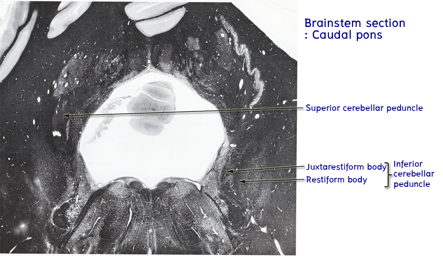
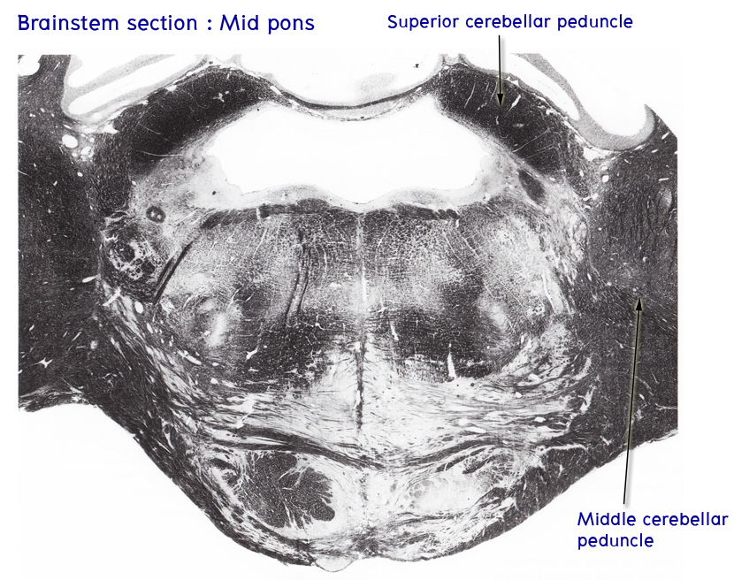
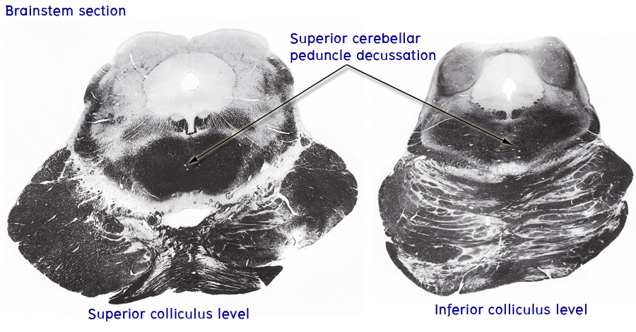
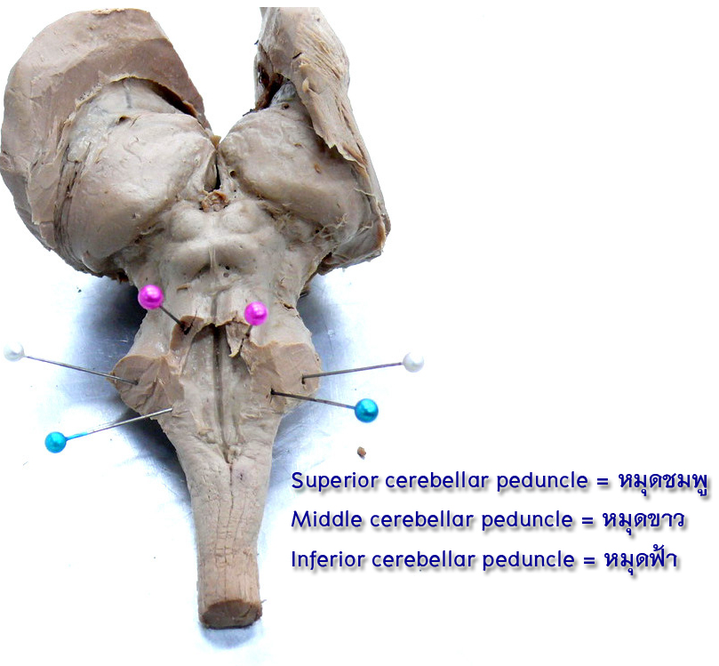
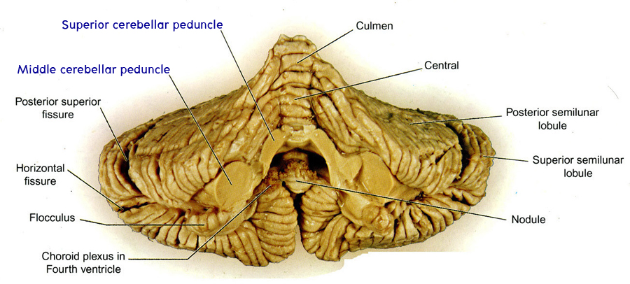

Cerebellar peduncles
ศึกษา cerebellar peduncles ทั้ง 3 คู่:
- Inferior cerebellar peduncle หรือ corpus restiforme (restiform body) ติดต่อกับ spinal cord ประกอบด้วย afferent fibers เป็นส่วนใหญ่ เป็น peduncle ที่สอดแทรกเข้าไปใน cerebellum ระหว่าง middle cerebellar peduncle ซึ่งอยู่ superficial กว่า และ superior cerebellar peduncle ซึ่งอยู่ deep กว่า
- Middle cerebellar peduncle หรือ brachium pontis ติดต่อกับ pons ประกอบด้วย afferent fibers ทั้งหมด ซึ่งเป็น pontocerebellar fibers ที่ถ่ายทอด impulses จาก contralateral cerebral cortex เป็น peduncle ที่อยู่ superficial ที่สุด
- Superior cerebellar peduncle หรือ brachium conjunctivum ติดต่อกับ midbrain ประกอบด้วย efferent fibers ซึ่งเริ่มต้นจาก deep cerebellar nuclei เป็นส่วนใหญ่ เป็น peduncle ที่อยู่ deep ที่สุด



นำ gross specimen มาชี้แสดง cerebellar peduncles ทั้ง 3คู่

